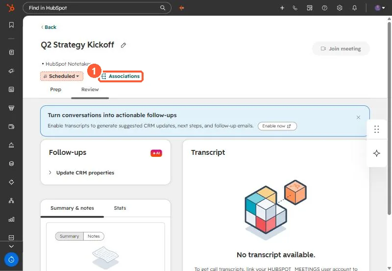
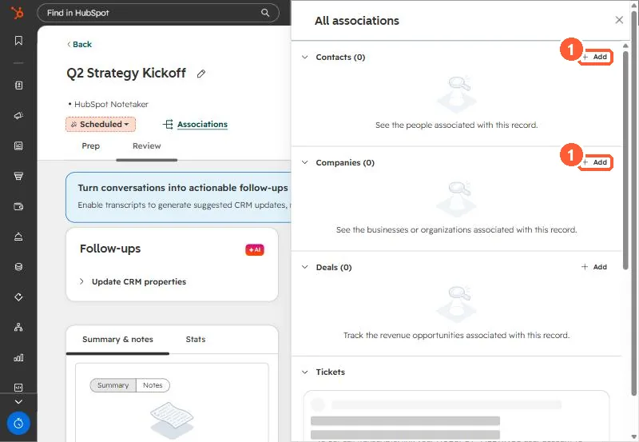
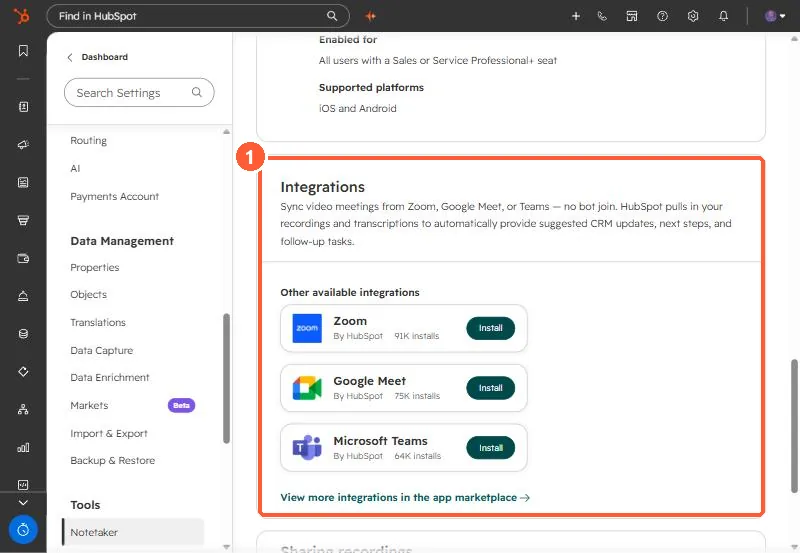

Short answer
When a Google Meet recording reaches HubSpot through the integration and there is no matching calendar meeting in HubSpot, the recording can land as its own meeting titled with the Meet code and associated with nobody. That is what we found in an agency portal: the client was listed as a participant, but the meeting had no contact or company association. Open the meeting, click Associations, and add the contact and company. Then fix the root cause, which was the host's calendar not logging meetings. Also check that recording, not just transcription, is on in Meet.
1. What we found
During a September audit of an agency's portal, client calls from several users were recorded but did not show on the client's record. They were meetings titled with the Google Meet code and owned by the user. One had the client listed as a participant and still had no association to the client's contact or company.
The recording had come in through the Google Meet integration, and there was no calendar meeting in HubSpot for it to attach to, because that user's calendar was not logging meetings. See recurring meetings not logging for that part.
2. Attach it by hand
Meetings live on the Meetings index. Click one to open its review page, then click Associations.




3. A recording that never came
One call in the same audit had no recording at all. The calendar event only had a Meet transcript attached, with no recording file. Only transcription had been turned on in Meet, so the integration had nothing to import. Turn on recording in Meet, or attach the transcript to the meeting by hand.
4. Where the integrations live
Google Meet, Zoom, and Microsoft Teams integrations are listed under Notetaker settings. HubSpot says Google Meet recording sync needs a Google Meet Business or Enterprise account. Since August 31, 2026, meetings recorded through these integrations create meeting records only, not call records.

